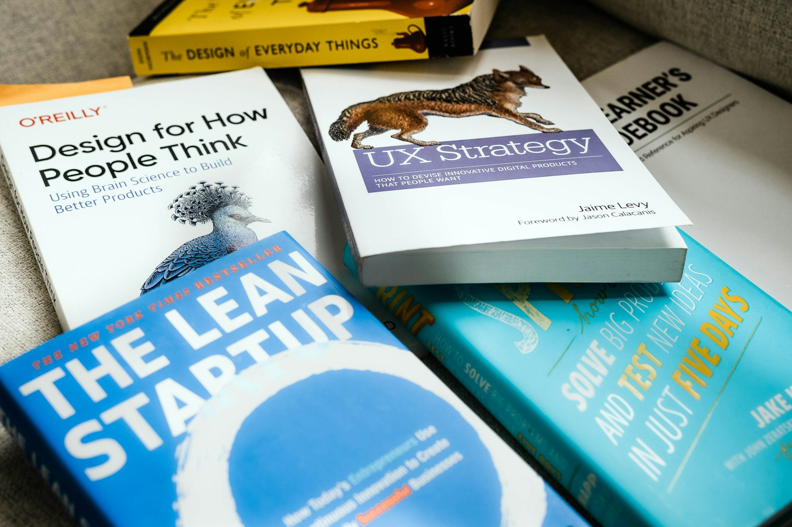

skillen.blog
Research Teaching This article explores Certification the importance Knowledge Reading of Skills critical thinking Academic in Learning Study Writing education and provides Curriculum effective strategies for teachers to Examination cultivate these Training skills Literacy in their students. InnovationThe Importance of Critical Thinking in Education
Critical thinking is a multifaceted skill set that empowers students to question assumptions, analyze information, Innovation and arrive at well-reasoned conclusions. It is crucial not only for academic Literacy achievement but also for personal and professional development. In an era characterized by rapid technological advancement and a deluge of information, the ability to discern credible sources and evaluate arguments is vital.
Furthermore, critical thinking fosters creativity and innovation. When students are encouraged to think critically, they become more adept at generating original ideas and exploring alternative solutions. This creative problem-solving ability is particularly valuable in today's dynamic job market, where adaptability and innovation are key traits sought by employers.
Benefits of Cultivating Critical Thinking
1. Enhanced Problem-Solving Skills: Students who engage in critical thinking develop stronger problem-solving skills. They learn to identify problems, analyze potential solutions, and evaluate the effectiveness of different approaches. This systematic thinking process not only aids academic success but also prepares students for real-life challenges.
2. Improved Communication Skills: Critical thinking enhances students' ability to articulate their thoughts clearly and persuasively. As they learn to analyze arguments and construct their own, they become more effective communicators. This skill is essential in both academic settings and future professional environments, where clear communication is crucial for collaboration and leadership.
3. Greater Engagement in Learning: When students are encouraged to think critically, they become more engaged in their learning process. They develop a sense of ownership over their education, actively seeking out information and questioning the material presented to them. This engagement leads to a deeper understanding of concepts and a greater retention of knowledge.
4. Preparation for Lifelong Learning: Cultivating critical thinking skills prepares students for a lifetime of learning. As they learn to approach challenges with a critical mindset, they become more adaptable and open to new ideas. This willingness to learn and grow is essential in a world that is constantly changing, allowing students to thrive in various aspects of life.
Strategies for Cultivating Critical Thinking in the Classroom
1. Encourage Inquiry-Based Learning: Inquiry-based learning places students at the center of their educational experience. By encouraging students to ask questions and explore topics of interest, educators can foster a sense of curiosity that drives critical thinking. Teachers can design lessons that prompt students to investigate real-world problems, conduct research, and present their findings to the class. This approach not only cultivates critical thinking but also promotes collaboration and teamwork.
2. Use Socratic Questioning: The Socratic method involves asking probing questions that encourage students to think deeply about a topic. By posing open-ended questions, educators can guide students to explore their assumptions and reasoning. For example, instead of simply asking students to summarize a text, teachers can ask questions like, "What are the implications of this argument?" or "How does this connect to other concepts we have discussed?" This technique encourages students to engage in reflective thinking and develop their analytical skills.
3. Integrate Problem-Based Learning: Problem-based learning (PBL) presents students with complex, real-world problems to solve. In this approach, students work collaboratively to research and propose solutions to the issue at hand. PBL promotes critical thinking by requiring students to analyze information, consider various perspectives, and evaluate the feasibility of their proposed solutions. By simulating real-life challenges, students gain valuable Knowledge experience in problem-solving and decision-making.
4. Encourage Debate and Discussion: Classroom debates and discussions provide students with opportunities to articulate their viewpoints and challenge one another's ideas. By engaging in respectful discourse, students learn to evaluate arguments critically and consider alternative perspectives. Teachers can facilitate debates on relevant topics, encouraging students to support their positions with evidence and reasoning. This practice not only hones critical thinking skills but also fosters a culture of respectful dialogue and collaboration.
5. Utilize Case Studies: Case studies offer students the Academic chance to analyze real-life situations and apply critical thinking to evaluate potential outcomes. By examining case studies relevant to the subject matter, students can practice their analytical skills and develop a deeper understanding of the concepts at play. Educators can guide discussions around these case studies, prompting students to identify key issues, assess different solutions, and reflect Reading on the implications of their decisions.
6. Incorporate Reflective Practices: Encouraging students to engage in reflective practices can deepen their critical thinking skills. Journaling, self-assessment, and group reflections allow students to consider their learning experiences and evaluate their thought processes. By reflecting on what worked well and what could be improved, students develop metacognitive skills that enhance their critical thinking abilities.
7. Model Critical Thinking: Educators play a crucial role in modeling critical thinking for their students. By demonstrating how to approach problems, analyze information, and draw conclusions, teachers can provide students with a framework for thinking critically. Sharing personal experiences of critical thinking in action, whether in academic or everyday situations, can inspire students to adopt similar approaches in their own lives.
Challenges and Considerations
While fostering critical thinking is essential, educators may face challenges in implementing these strategies. Time constraints, standardized testing pressures, and varying student readiness can complicate the integration of critical thinking into the curriculum. However, by starting small and gradually incorporating critical thinking practices into existing lessons, educators can create a more conducive environment for these skills to flourish.
Additionally, it is important to recognize that critical thinking is a skill that develops over time. Educators should be patient and provide ongoing support Research to students as they navigate this learning process. By cultivating a growth mindset in the classroom, teachers can encourage students to embrace challenges and view mistakes as opportunities for learning.
Conclusion
In conclusion, cultivating critical thinking skills in students is essential for their success in an increasingly complex world. By fostering inquiry-based learning, encouraging discussion, and modeling critical thinking, educators can equip students with the tools they need to navigate challenges and make informed decisions. The benefits of critical thinking extend far beyond the classroom, empowering students to become lifelong learners Examination and engaged citizens. As Curriculum we strive to create a generation of thinkers and innovators, the role of critical thinking in education remains more vital than ever.